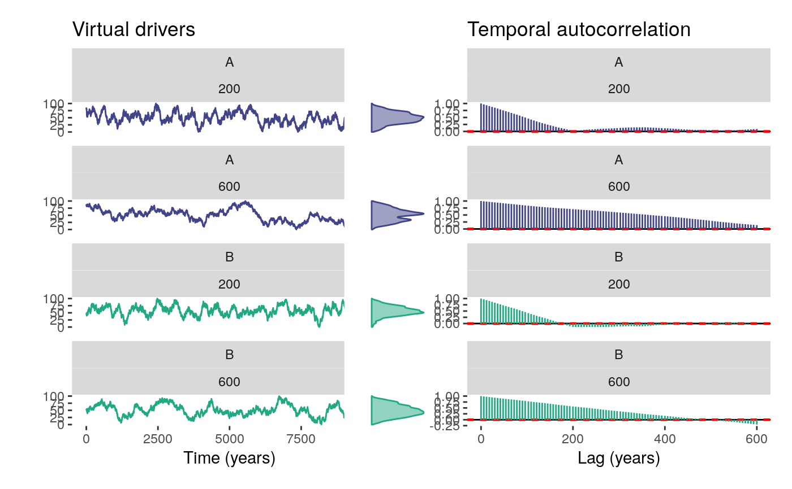

Wrapper of simulateDriver to generate several drivers with different autocorrelation lengths, and return a long format dataframe to be used as input for simulatePopulation. It also produces a plot of the generated drivers. Important: note that the variable time runs from left to right, with lower values representing older samples.
simulateDriverS( random.seeds=c(60, 120), time=1:10000, autocorrelation.lengths=c(200, 600), output.min=c(0,0), output.max=c(100, 100), driver.names=c("A", "B"), filename=NULL)
| random.seeds | vector of integers, seeds to be used by |
|---|---|
| time | integer, or numeric vector of integers with constant intervals. If a single integer is provided, a time sequence is generated from 0 to the given integer as seq(0, time, by = 1). Default is 1:10000. |
| autocorrelation.lengths | vector of integers, represents the lengths of the convolution filters to be used to impose a particular temporal structure on each driver. Default is 100, equivalent to a filter composed by a hundred of ones. |
| output.min | numeric vector, minimum values of the output time series. Used as input for rescaleVector. Default is 0. |
| output.max | numeric vector, maximum values of the output time series. Used as input for rescaleVector. Default is 100. |
| driver.names | character vector, with labels to be used to identify the drivers. |
| filename | character string, name of output pdf file. If NULL or empty, no pdf is produced. |
A long format dataframe (see dataset drivers) with the following columns:
time: integer.
driver: character, values are A and B
autocorrelation.length: numeric, default values are 200, 600, and 1800.
value: numeric, value of the driver for the given time.
It is recommended to use time vectors with a time step of 1 between consecutive values when the output is to be used as input for simulatePopulation, which considers annual time-steps while simulating virtual pollen curves. Initial random sequence is generated by rnorm. Desired temporal autocorrelation are approximate, but deviation becomes higher if autocorrelation.length is larger than half the length of time. Consequently, the function limits autocorrelation.length to length(time)/2.
drivers <- simulateDriverS( random.seeds=c(60, 120), time=1:10000, autocorrelation.lengths=c(200, 600), output.min=c(0,0), output.max=c(100, 100), driver.names=c("A", "B"), filename=NULL )str(drivers)#> 'data.frame': 40000 obs. of 4 variables: #> $ time : int 1 2 3 4 5 6 7 8 9 10 ... #> $ driver : chr "A" "A" "A" "A" ... #> $ autocorrelation.length: num 200 200 200 200 200 200 200 200 200 200 ... #> $ value : num 80.6 83.8 80.9 78.9 82.7 ...